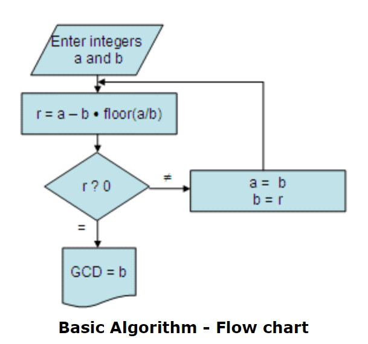

Greatest Common Divisor, aka GCD, is a mathematical concepts that refers to the largest postive integers that can divide 2 or more integers without remainder. It is sometimes known as the "Greatest Common Factor" or "Highest Common Factors"
There are various methods to calculate GCD, such as prime factorization, Euclid's Algorithm, and Binary GCD algorithm. However, the most popular / well-known method for GCD will be the Euclidean Algorithm, derived from the Euclid's Algorithm.
Euclidean Algorithm is more well-known than its parent counterpart due to its far superiority in efficiency when solving for the GCD of 2 integers.
The image below details the logic flow of the Euclidean Algorithm
GCD has various applications in software engineering, particularly in algorithms and data structures. The following are a list of ways that GCD is used in software engineering.
Enter two numbers to calculate their Greatest Common Divisor (GCD):